Mupy
Mupy is a beloved Brazilian soy-based drink that has become a household name in Brazil, known for its wide range of fruit flavors and its loyal following as a dairy-free alternative to traditional milk-based drinks.
A personal project imagining a commercial for the brand: style frames, a storyboard, and environment and character design for a hypothetical Mupy ad.
Style Frames
Key visual frames imagining the look of a Mupy commercial: the brand's signature fruit splash, a storefront built around the logo, and a hero shot of the full flavor lineup.
Storyboard
A full storyboard for the hypothetical commercial: a chef slicing fresh fruit that splashes into the Mupy pouches, set against the branded storefront.
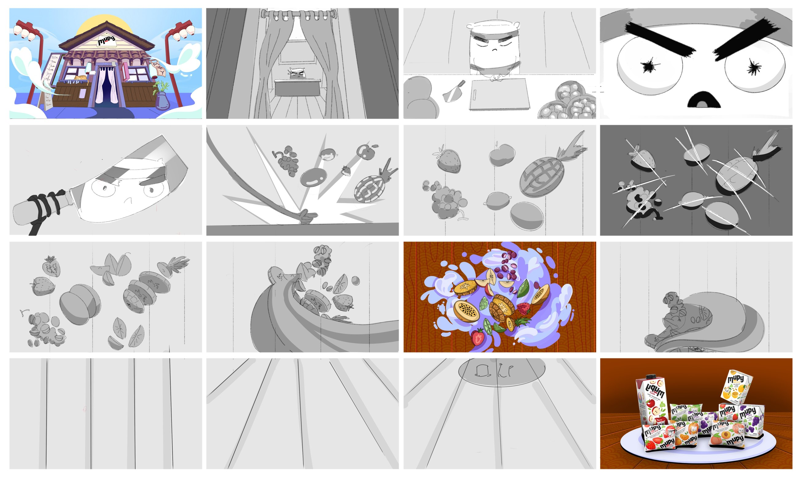
Environment Design
Development of the storefront setting: early architectural line-art explorations, a fully rendered grayscale pass, day/night lighting studies, and color palette variants carried through to the fruit-splash motif.
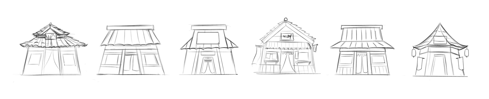
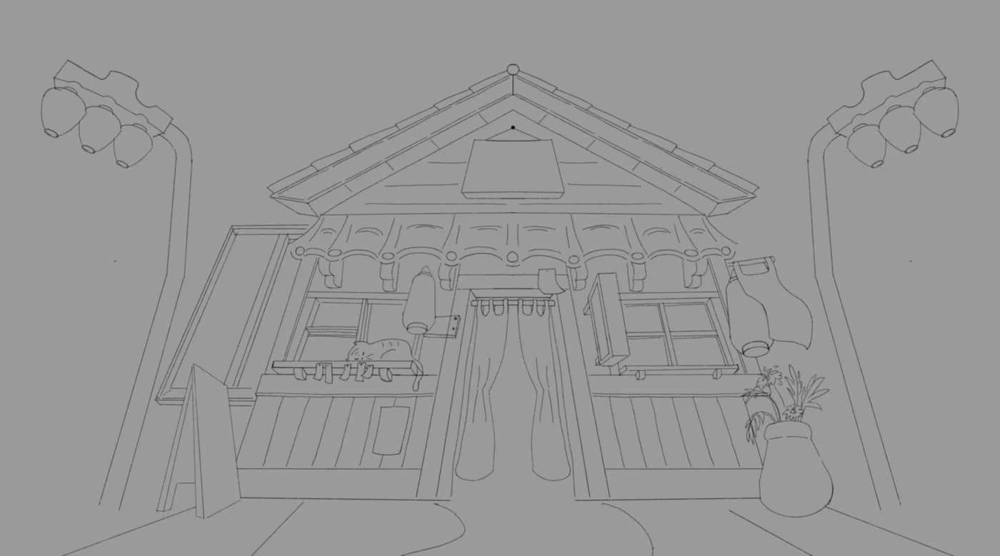
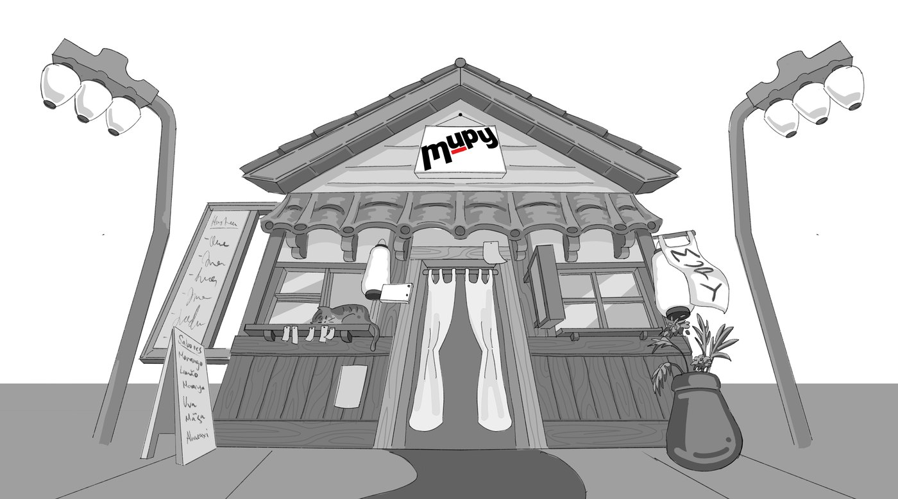
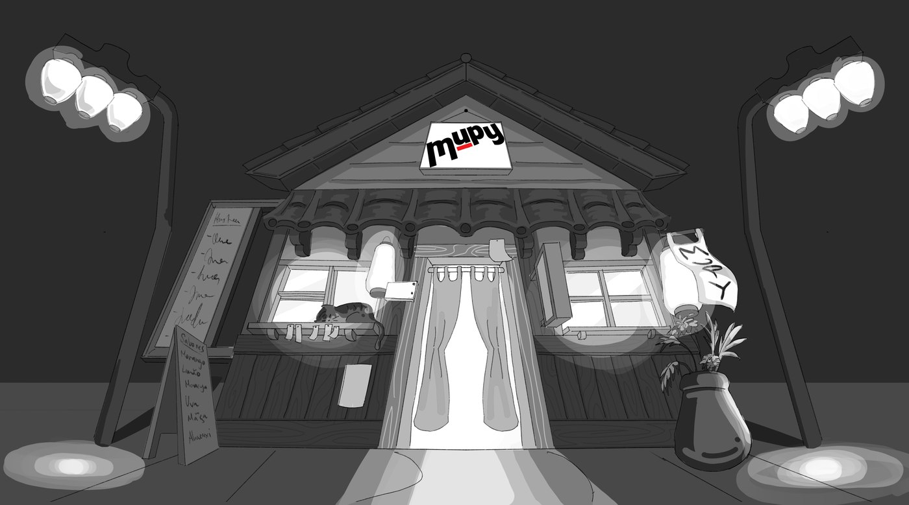
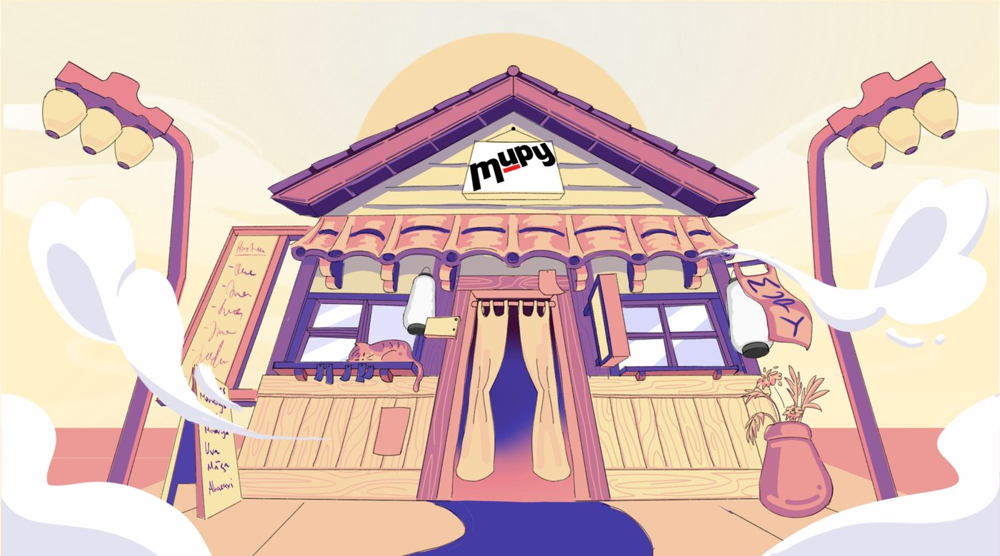
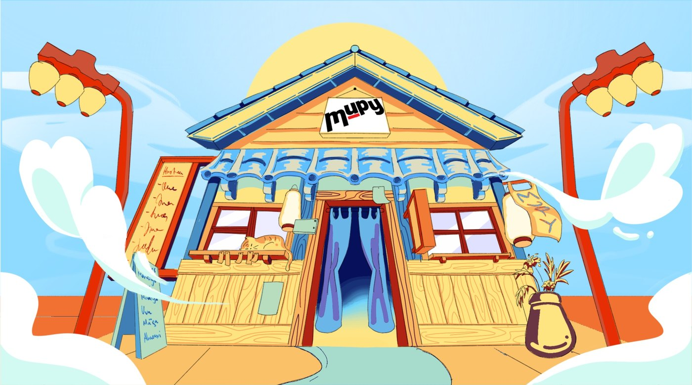
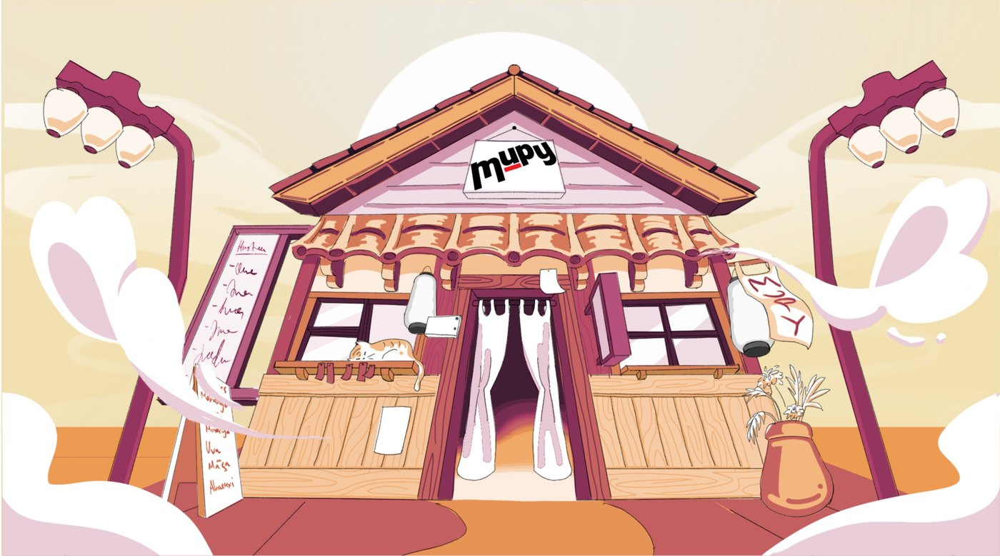
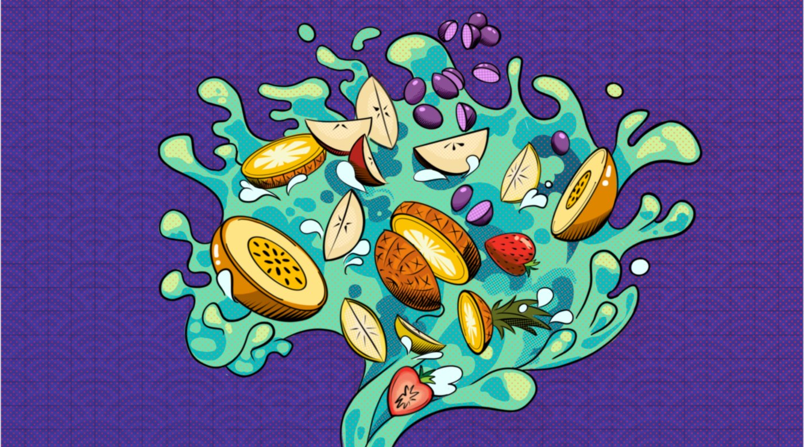
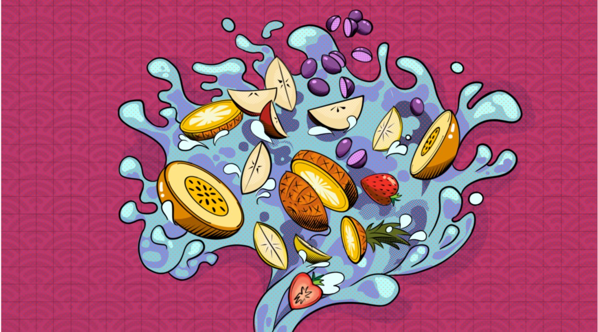
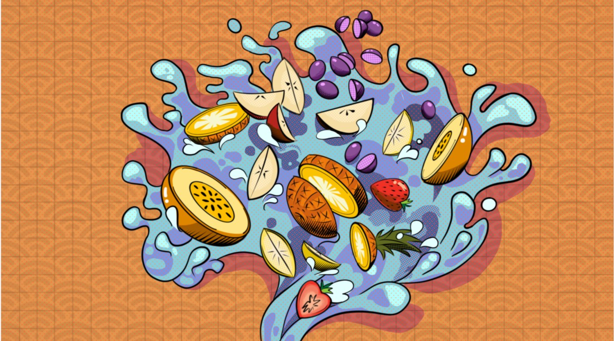
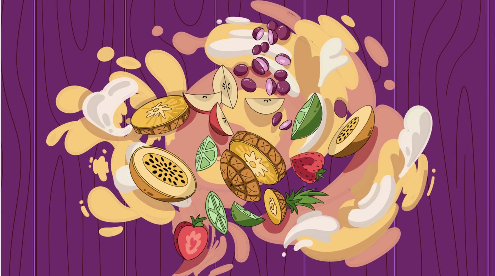
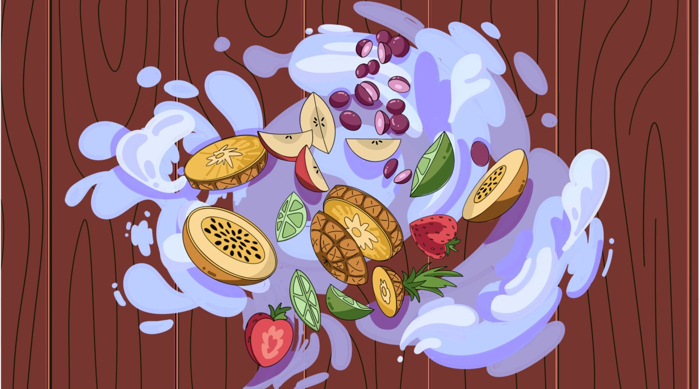
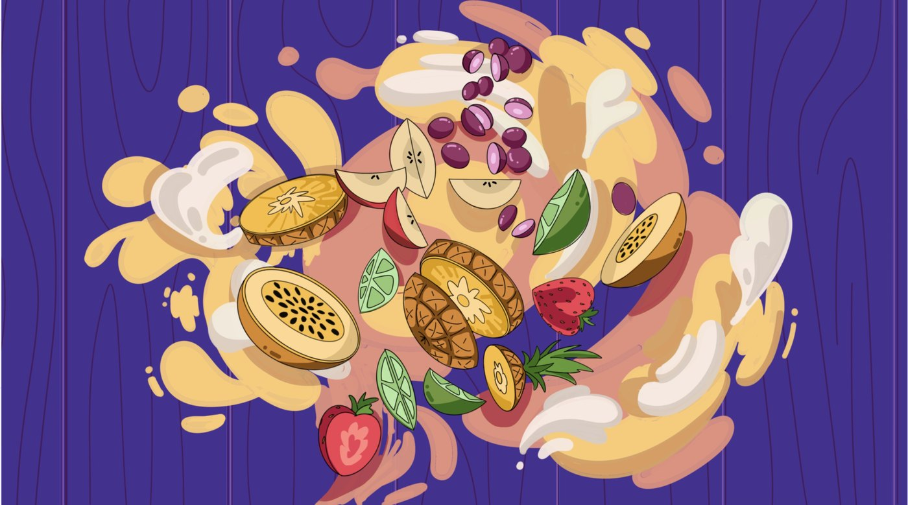
Character Design
A lineup of Mupy pouch mascots, each given its own personality, from a sleepy sailor to a scowling martial artist, to carry the brand's playful tone.
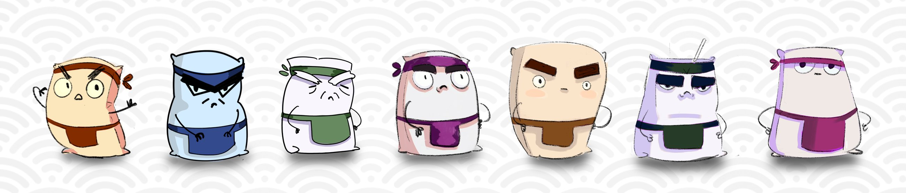